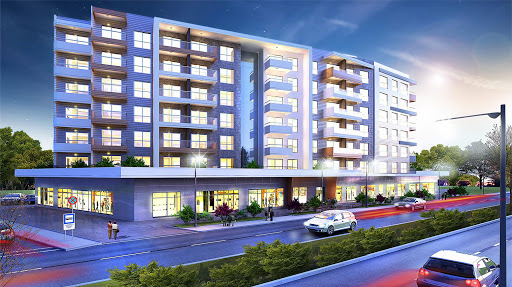
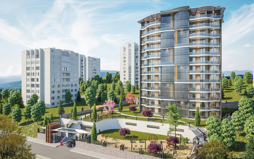

TAAHHÜT:
Cankurtaran Ýnþaat, ‘’Engineering News Record’’ (ENR) tarafýndan her yýl yayýnlanan ‘’Top 250 International Contractors List’’ listesinde EPC dizayn, proses ve inþaat müteahhiti olarak yer almaktadýr. TEPE inþaat her çeþit EPC hizmetini rahatlýkla sunabilmektedir. EPC Projelerin gerçekleþtirilmesinde, geliþmiþ teknolojik ve tasarým altyapýsýnýn kullanarak uluslararasý teknoljik proses partnerleri ile baþarýyla birçok EPC projeye imza atmýþtýr.
YATIRIM:
Cankurtaran Ýnþaat gayrimenkul ve yatýrým sektörlerinde de öncü firmalardan biridir. Hizmetleri içerisinde; yatýrým planlama, arazi geliþtirme, pazar araþtýrma ve fizibilite çalýþmalarý, mimari ve teknik proje tasarýmý, inþaat müteahhitlik ve gayrimenkul satýþý, servis ve tesis yönetimi bulunmaktadýr.
PROGRAM YÖNETÝMÝ:
Tepe Ýnþaat olarak, herhangi bir yatýrým yapmak isteyen yatýrýmcýya tek elden bütün ihtiyaçlarýn karþýlýyoruz. Yatýrýmcýlarla imzalanan çerçeve sözleþme sonrasýnda ilgili arsanýn imar uygulama süreçlerinden baþlayarak fizibilite raporlarýnýn hazýrlanmasý, tasarýmlar, resmi izinler, imalat ve pazarlama - satýþ yönetim planýna kadar tüm sürecin yönetimini içeren Program Yönetimi, yatýrýmcýlara Tepe Ýnþaat'ýn tecrübesi ile yatýrým yapma imkaný sunuyor
